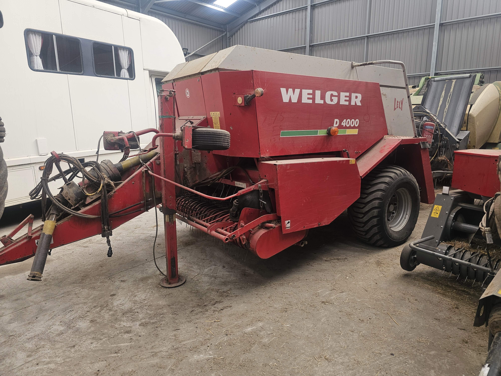

Bailers
We have three types of bailers for you to choose from:
Round Bailing

The Krone Comprima CF 155 XC offers a premium "one-pass" baling solution that produces high-density,
perfectly shaped hay bales ranging from 1.25m to 1.50m in diameter. Its camless pick-up and NovoGrip system
ensure a clean sweep of the field with minimal leaf loss, preserving the maximum nutritional value and
protein in your hay. By using this high-capacity machinery, we provide customers with faster field
clearance, all while protecting the ground from compaction thanks to its stable tandem axle.
Conventional Packs

This high-efficiency setup pairs the Massey Ferguson 1842S conventional baler with a Bale Baron 4250T to
produce traditional, easy-to-handle hay bales in large, mechanized bundles. This system allows us to clear
your fields with incredible speed, turning individual small bales into "power packs" of 21 that can be moved
and loaded entirely by machine. For the customer, it provides the best of both worlds: the convenience of
small bales for manual feeding combined with the professional transport and storage efficiency
Heston Bailing

The Lely Welger D4000 is a powerhouse in large square baling, engineered to produce exceptionally dense
80cm x 70cm bales that maximize every inch of your storage space. Its heavy-duty design
ensures a consistent, rock-solid shape that won't fall apart during transport, providing you with
professional-looking stacks that are easy to handle and feed. By utilizing this high-output machinery,
providing a fast and reliable harvest, delivering the perfect balance of field efficiency and premium bale
quality